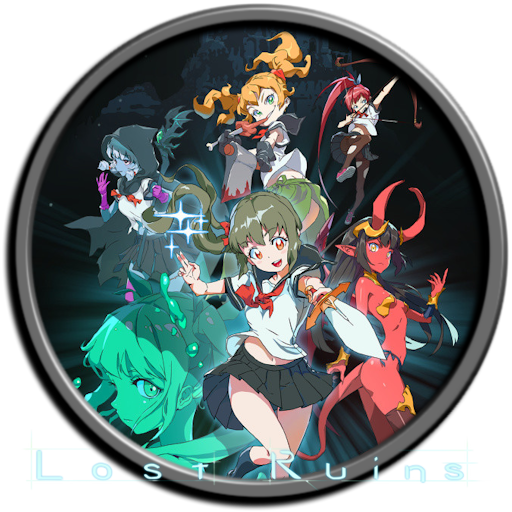
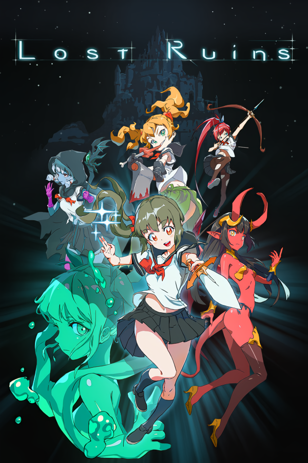

 Lost Ruins
Details
|  | |
| Playtime | Not Played |
| Last Activity | Never |
| Added | 5/06/2025 3:25:10 |
| Modified | 8/06/2025 5:32:23 |
| Completion Status | Not Played |
| Library | Steam |
| Source | Steam |
| Platform | Macintosh PC (Windows) |
| Release Date | |
| Community Score | |
| Critic Score | |
| User Score | |
| Genre | Action Adventure Indie |
| Developer | |
| Publisher | |
| Feature | Achievements Cloud Saves Family Sharing Full Controller Support Remote Play On Phone Remote Play On Tablet Single-Player |
| Links | Community Hub Discussions Guides News Store Page PCGamingWiki Achievements |
| Tag | 2D Action Adventure Anime Character Customization Combat Cute Dark Female Protagonist Hack and Slash Horror Inventory Management Metroidvania Pixel Graphics Platformer Sci-fi Sexual Content Side Scroller Singleplayer Survival |
Description

A young girl wakes up in a dimly lit dungeon without any of her memories. Surrounded by horrible, bloodthirsty monsters, she is rescued by a mysterious magician, Beatrice. With Beatrice’s help, the girl goes on a perilous journey to find answers and unlock the secrets of the Lost Ruins.

Engage in Combat
Combat in Lost Ruins is both strategic and methodical. Slash away at enemies, burn them to a crisp, or even deflect their projectiles back at them. Arm yourself with a variety of swords, axes and other assorted medieval weaponry, and hack monsters to pieces.Master Spells
For those with an affinity for magic, Lost Ruins allows you to cast a variety of spells through wands, tonics, and scrolls. Burn monsters, freeze bosses, and heal yourself when in danger. Choose what works for your playstyle and make a magic casting character that’s totally your own.Choose Your Accessories
The world of Lost Ruins is a dangerous one and being armed to the teeth with awesome weaponry is sometimes not enough. That’s where accessories come in. Accessories are unique pieces of equipment with all manner of effects. One accessory might protect you against fire, while another might heal you when you’re poisoned. The right combination of accessories can create different strategic options for your adventure.Make Use of the Environment
As you explore the depths of Lost Ruin’s dimly lit dungeons, you will find that while everything around you might bring about your death, you can also use the environment around you to your advantage. Elements within the world will react with other elements realistically. Flammable liquids will be set ablaze when in contact with lit lanterns. Ice magic will freeze bodies of water, making them dangerously cold. The more you understand the environment and how to use it to your advantage, the more dangerous you will become.
Main Character

A young school girl who wakes up in a dangerous underground maze with no memory of her past. Desperate to find answers to who she is and how she ended up in this place, she begins exploring the ruins.
Beatrice

A mysterious woman with incredible magical ability, Beatrice acts as the main character's guide through the lost ruins. She seems to be hiding something, however.
Goblin Merchant

This helpful little guy works for Beatrice, and appears throughout the game to assist the main character.
Sora & Mingie

These two girls aren't just zombies, they're also big fans of pop music idols, evidenced by the glow sticks they carry wherever they go.